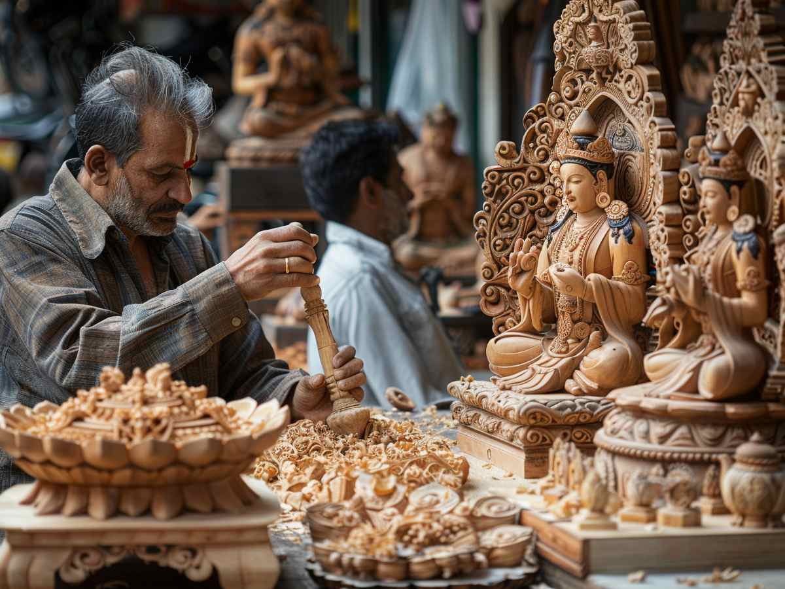
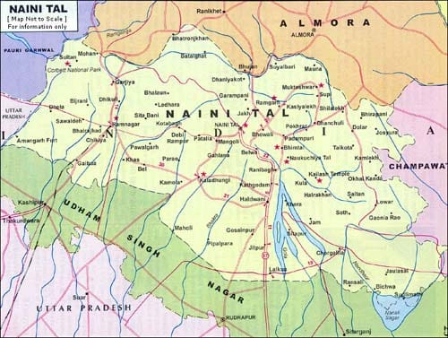

Woodcraft from Nainital is renowned for its intricate hand-carving and elegant wooden artifacts. Artisans from this region have perfected their craftsmanship over generations, producing furniture, decorative pieces, utensils, and religious idols. The wood used is usually sourced from locally available trees such as pine, oak, and cedar, making it sustainable and eco-friendly. The finishing and polish give these products a luxurious touch while preserving their ethnic charm. Nainital's woodcraft products are not only beautiful but also functional, carrying a deep sense of culture and tradition.
The tradition of woodcraft in Nainital traces back to ancient times when skilled artisans would carve religious motifs for temples and royal estates. The region's forests provided quality raw materials, while the peaceful Himalayan surroundings nurtured creativity. Today, Nainital remains a center for artistic excellence in woodcraft. Tourists often take home wooden souvenirs as tokens of Kumaoni heritage. The craft supports numerous families, preserving cultural practices and providing a livelihood to many local artisans.
For orders or business inquiries, contact Nainital Woodcraft Cooperative at +91 6364665722 or email at support@tvami.com. Visit https://tvami.com/collections/odop-products or explore shops in Mall Road and Bhotiaparao in Nainital for a wide range of beautiful wooden items.

- Woodcarving in Nainital gained popularity during the British colonial era for furnishing their summer homes.
- Some traditional designs include carvings of lotus, peacocks, and mythological figures.
- The craft is often passed down within families, with children learning skills from a very young age.
- The annual Nainital Craft Fair showcases the best of local woodcraft talent and innovation.